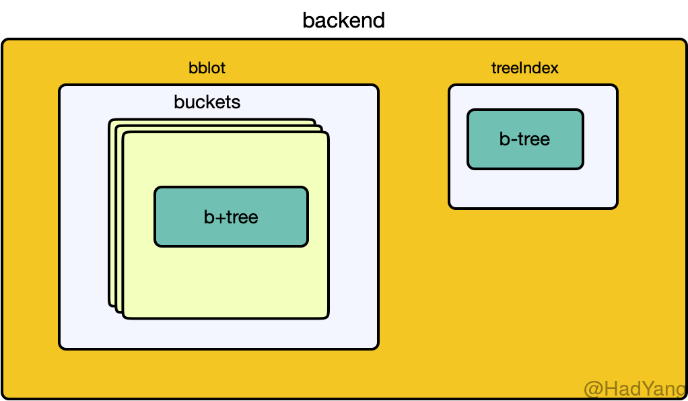
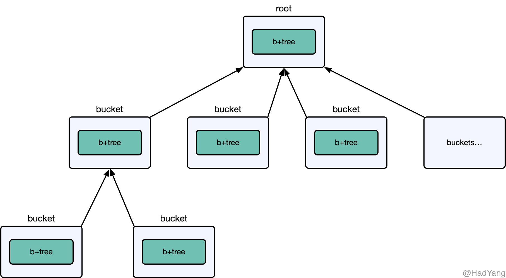

【ETCD】存储模型
文章目录
ETCD 服务端提供强一致性的 KV 存储，其整体结构在《初识ETCD》 中介绍过其组成部分，这里再详细的介绍其底层物理存储结构。ETCD 中底层存储就是 Backend 这个接口，其主要提供读写事务的能力。Backend 的组成如下图所示，包含 bblot 和 treeIndex 两个部分。

bblot
实现上，ETCD 目前（v3.4.9）是采用 bbolt 数据库，这个数据库是一种内置的数据库，和 sqlite 有些相似。bbolt 是纯 go 语言编写的 KV 数据库，其提供简单、高效并且可靠数据存储，但不能提供类似 MySQL 这种数据库的全部功能。
bblot 可以提供有效的数据一致性和线程安全保证，但是其在处理并发上有些欠缺。 bblot 允许多个读事务并行，但只允许 同时存在一个写事务，当同时开启多个写事务时，事务会被阻塞直到上一个写事务完成。
bblot 的数据存放在单独的文件中，一个数据库文件也就对应一个 DB。在 DB 内对存储按 Bucket 组织，每个 DB 有都有一个 rootBucket，其在 DB 创建时就会初始化。然后，每个 rootBucket 下可以拥有多个 subBucket 如下图所示，是一个树型结构。Bucket 可以理解为命名空间， Bucket 内部是一颗 B+ 树。

ECTD 提供 MVCC 的能力，看起来 bblot 本身并不提供这种支持。所以 ETCD 在 bblot 中存储的不是用户提交的 KV 数据，而是将 revision 作为键，将 KV 数据以及一些其他辅助信息存储为值。
revision 表示键空间的修改，其拥有两个属性： main 表示一次键空间的原子操作（事务提交）， sub 表示单个事务内部的多次修改。每次事务（单Key的写入也会开启事务）提交后 main 都会递增。
type revision struct {
main int64
sub int64
}
bblot 中存储的值包含用户提交的 KV 、版本信息以及 Lease。
type KeyValue struct {
Key []byte
CreateRevision int64
ModRevision int64
Version int64
Value []byte
Lease int64
}
TreeIndex
为了加速用户 Key 的查找，ETCD 还将 KV 数据中的 Key 单独存放。使用一个 treeIndex 数据结构存放 Key，其内部是一个 B 树。 treeIndex 是存储在 内存 中的，用于加速 Key 的查找，并且在每次服务启动的时候进行初始化，加载 DB 中的数据进行构建。treeIndex 中键存储的是 keyIndex 结构，包含 Key 以及 generation 信息。
type keyIndex struct {
key []byte
modified revision
generations []generation
}
每个 keyIndex 都至少包含一个 generation，每个 generation 都表示 Key 的一个生命周期。当 Key 被删除时，会将当前的 generation 标记为删除，并生成新的空 generation。
type generation struct {
ver int64
created revision
revs []revision
}
对某一个 Key 进行一系列操作：put(1.0);put(2.0);tombstone(3.0);put(4.0);tombstone(5.0)，会生成如下数据：
rev: 5
generations:
{empty}
{4.0, 5.0(t)}
{1.0, 2.0, 3.0(t)}
当进行数据压缩时，如果 generation 中包含的 revision 小于被压缩的 revision，则 generation 中的 revision 会被移除：
compact(2) on the previous example
generations:
{empty}
{4.0, 5.0(t)}
{2.0, 3.0(t)}
如果 generation 中所有的 revision 都被压缩了，则 generation 会被移除：
compact(4)
generations:
{empty}
{4.0, 5.0(t)}
如果 keyIndex 中所有的 generation 都被移除，则 keyIndex 会被移除：
compact(5):
generations:
{empty} -> key SHOULD be removed.
compact(6):
generations:
{empty} -> key SHOULD be removed.